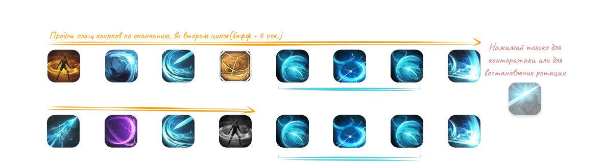

333 Шакрамы ✨¶
Кому подходит: Тем, кто хочет максимальный урон в Остаточной энергии.
- Использует «Воздушные шакрамы» как два быстрых каста (FTF комбо) через сброс скилла.
- «Хитроумный финт» всегда свободен для контр-скиллов, восстановления, очищения или Адреналин поддержания.
- Высокая эффективность самоцветов: «Воздушные шакрамы» и «Концентрация воли», «Плащ клинков».
- «Воздушные шакрамы» — основа твоего урона.
Профиль билда
Код билда¶
B8D439DF1CD065F57B13617B183389592A0CC33220F6BE9E73BB5DE3436975884F075C0D62505EC34A6E8134B428C59E34EF8CAE65BB121AB97300D34C3BC542
Система А.Р.К.¶
СоветыСоветы по А.Р.К.
- Используй Калькулятор Созвездий А.Р.К., чтобы оптимизировать вкладку «Экспансию».
- Стремительное восстановление 3 / Божественное вдохновение 3 / Пробужденное сознание 1 может решить проблемы с маной ценой совсем небольшой потери урона.
ЗаметкаСозвездия А.Р.К.
- Добирай «Энергию меча смерти» до 17p, когда получается: «Воздушные шакрамы» — твой скилл с наибольшим уроном.
АльтернативаЦиркуляция энергии 5
- Делает билд прощающим ценой примерно 3% урона за счёт роста пассивной генерации сфер.
АльтернативаNA/EU 333 Стандарт
- Альтернатива, старающаяся сохранить похожий стиль игры на «Стандарт» ОС, с «Разрубающими лезвиями» и лишней маной.
- Это улучшение относительно «Стандарта» ОС, но стиль игры несовместим с современной ОС и уступает по урону.
- Рекомендуется, если другие билды не получаются или ты предпочитаешь привычную игру по старым билдам.
- Его гайд и вся связанная информация ведутся здесь; здесь он не размещён и не поддерживается.
Гравировки¶
 Титаноборец
Титаноборец
 Адреналин
Адреналин
 Бесшумный убийца
Бесшумный убийца
 Неутомимый натиск
Неутомимый натиск
 Моргенштерн
Моргенштерн
Подробнее о гравировках можно прочитать здесь!
Набор навыков¶
СоветыРуны
- Используй Легендарный Марх на «Плаще клинков», если проблемы с маной, или используй Солум на «Хитроумном финте», что бы снять негативный эффект.
ЗаметкаОпции и триподы
- Можно поднять «Хитроумный финт» до Ур. 7
- На первом уровне триподов можно выбрать сокращение перезарядки («Быстрая подготовка»), а так же можно снизить расход маны («Сосредоточение»)
- На втором уровне можно выбрать трипод «Подсечка» и умение начнет применяться мгновенно и без рывка
Самоцветы¶
Ротация¶
Используй Открытие (по желанию), затем чередуй Цикл 1 и 2 до конца боя. Открытие набирает стаки «Адреналина» и навешивает синергии.
Открытие с 3 сфер ( Мощная «Эйфория»)
Мощная «Эйфория»)
Чередующиеся циклы
1Цикл «Искусства меча» + «Убийственной стали»
2Цикл «Длани Авесты» + «Охоты за головами»
- Старайся уместить «Двойную плеть» из Цикла 2 под «Плащ клинков» из Цикла 1, чтобы набрать 3 сферы без повторного применения или восстановления. Если дошёл только до «Длани Авесты», обычно хватает одного дополнительного применения «Хитроумного финта».
- «Плащ клинков» в Цикле 2 применяется, только если иначе не хватит 3 сфер. Решай сам. Если применил, он действует минимум до «Искусства меча» в Цикле 1; повторное применение на истечении перезарядки синхронизирует их. Если он не был нужен или не дожил, ничего не меняется.
- Длань Авесты + Убийственная сталь
- Искусство меча + Охота за головами
Открытие с 0-2 сфер
- Цикл 1, если доступна «Убийственная сталь», иначе начни с «Плаща клинков» + Цикл 2.
- Комбо «Шакрам» + «Иссечение» + «Шакрам» применяй раньше ради групповой синергии.
Восстановление
СоветыВидео по восстановлению
Посмотри это 2-минутное видео по восстановлению в 333.
- Используй Хитроумный финт когда сфер немного не хватает, или просто используй, если сомневаешься, что не доберёшь сфер
- Используй свободные стаки «Двойной плети» или «Охоты за головами», в том случае если пропустил важные скиллы
- Не забывай, что в рейде нет чёткого паттерна восстановления ротации — отталкивайся от механик босса и от того, какие именно скиллы сколько заполняют и перезаряжаются. Понимание восстановления ротации придёт со временем

Распределение Урона¶
Древние ядра, самоцветы полностью Ур. 10